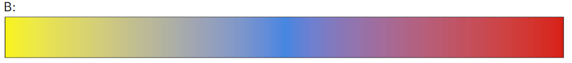
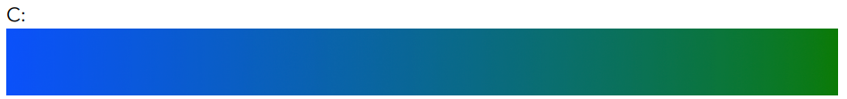
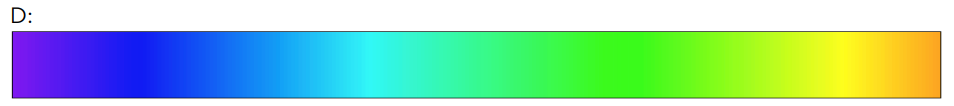

This is a sequential scale since it goes from a dark to light color with no neutral midpoints.
I would say this is an effective color scale. The difference between the start and end ranges would be sufficient to show differences in data.

I would say this is an effective representation for the data since it ranges from two extremes and has a midpoint that is consideredd neutral.

Anomalous Trichromacy: Blue-Weak/Tritanomaly
Dichromatic View: Blue-Blind/Tritanopia

I wouldn't recommend using this scale since it has two areas with similar, neutral hues that could be confusing since they lie on opposite ends.
Having a diverging scale with a more neutral center could more accurately represent the data.
Problem 2:
Part B:
The logarithmic scale provides clarity in the location of the attempts.
Since there is a great difference in the number of shots between locations,
they comparatively appear less important than the one bright spot with a linear scale
and are harder to distinguish amongst similar nodes. However, those spots now appear as
closer in importance to the one bright spot and cannot have negative values associated since the log of a negative number is undefined.